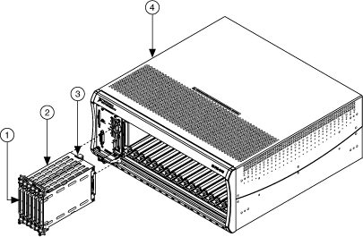

用于 NI SwitchBlock 的 NI PXI-2800 载体可在 PXI 机箱内运行，或者当连接到 PXI 外设插槽或 PXI Express 混合外设插槽时，可在 PXI Express 机箱内运行。该载体占用四个 PXI/PXI Express 机箱插槽，同时允许插入多达六个NI SwitchBlock 卡，从而实现比 PXI 开关模块更大的开关密度。安装的卡可以在软件中组合成适合测试需求的多卡设备。下图表示带有 PXI/PXI Express 机箱的 SwitchBlock 卡和载体。
|  | ||||||||||
|
|
注意 载体占用的倒数第二个插槽必须是 PXI 插槽，因为这是载体连接到 PXI 背板的位置。这是 MAX 分配给运营商的时隙编号。 |
您可以使用 NI 2806 扩展桥接器扩展多个 NI SwitchBlock 载体。
 提交有关此主题的反馈。
提交有关此主题的反馈。 访问ni.com/support以获得技术支持。
访问ni.com/support以获得技术支持。